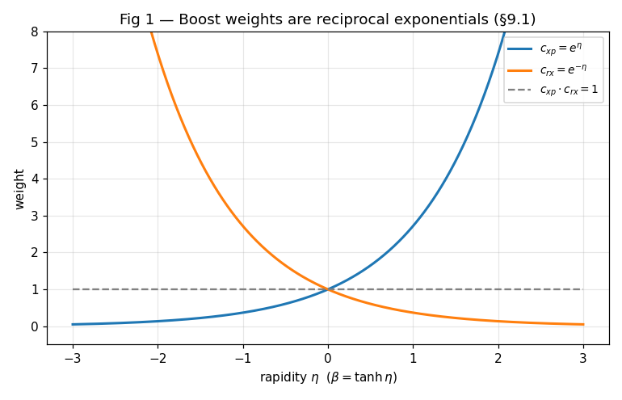
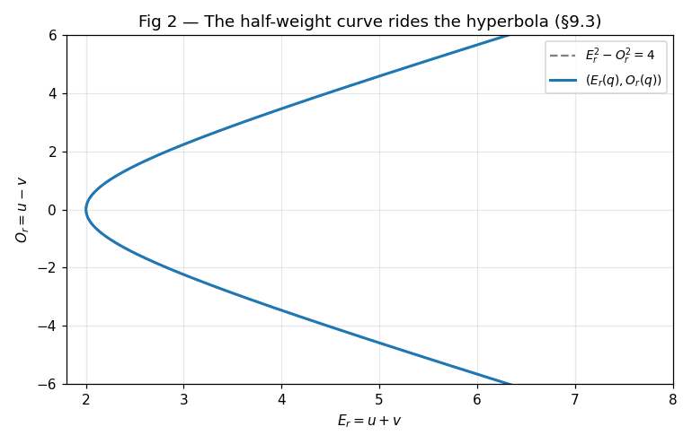
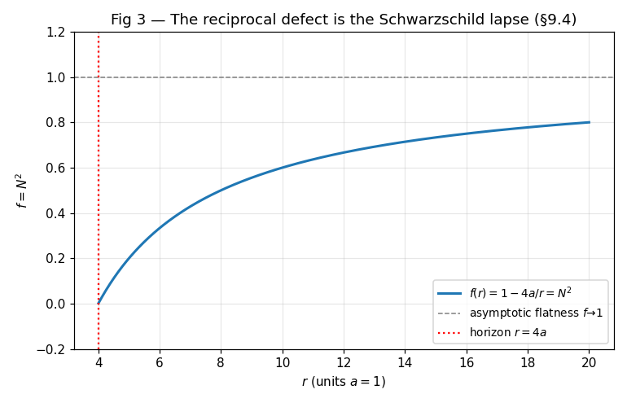
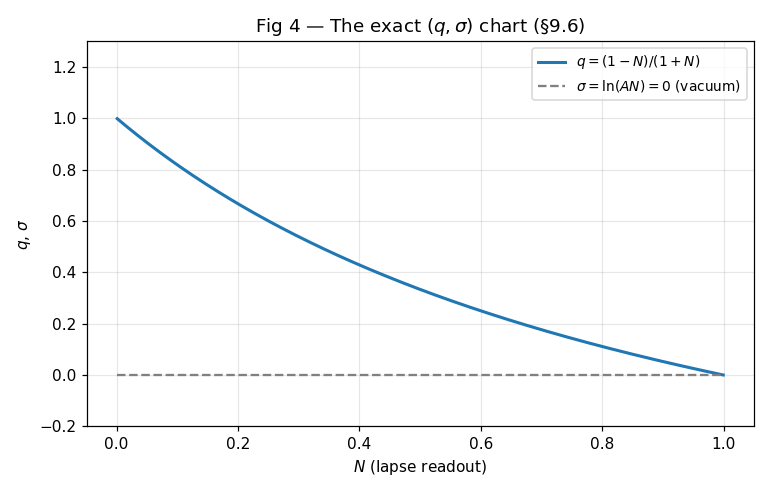

A restructured rewrite of Book 9 of R Theory — Volume II (source lines 2094–2264 of the volume text; 171 lines, 882 words). Pictures and intuition first; the formal audit second. The book's own title governs everything below: a familiar physical structure reached after an explicit import is a conditional reconstruction, not a derivation of relativity or gravitation.
Contents. I. See it first · II. Then earn it · III. What Book 9 establishes, and what it doesn't · IV. Close the book
Four pictures — one for each section of Book 9 that contains a plottable exact identity (§§9.1, 9.3, 9.4, 9.6). The obstruction and import sections (§§9.2, 9.5, 9.7) and the closure ledger (§9.8) carry no new plottable curve, so no figure is forced for them. The graphs below are live Desmos calculators (drag to pan, scroll to zoom); if Desmos cannot load, a static rendering appears instead. Honesty note: live Desmos rendering was not browser-verified from this environment; every figure has a static PNG fallback, and every plotted expression was executed and numerically verified before drawing.




The formal audit, section by section, with source line references (source.txt = volume lines 2094–2264). Notation: srx = |csc x|+cot x, sxp = |csc x|−cot x, cxp = |sec x|+tan x, crx = |sec x|−tan x (global conventions, Volume II front matter).
On the declared positive-energy timelike chart (lines 12–15) the contract sin χ = β = pphysc/E, cos χ = mc²/E is assumption or axiom — a projection contract, honestly labeled as such by the book ("These are exact conditional correspondences after the relativistic projection contract is declared… They do not derive the mass shell," lines 35–37). Given the contract, the four identities (lines 19–27) — sxp = pc/(E+mc²), srx = (E+mc²)/(pc), cxp = (E+pc)/(mc²), crx = (E−pc)/(mc²) — are completed numerical check (2000 random β ∈ (0.01, 0.99), max error 5.7e−14; the sxp form uses E²−p²c² = m²c⁴, which is part of the contract). With β = tanh η: cxp = eη, crx = e−η completed numerical check (max error 1.5e−14), and cxp·crx = 1 reproduces the mass shell exactly (max error 1.2e−16). The reciprocal identities srxsxp = cxpcrx = 1 are earned upstream checked proof (Volume I ledger: Book 2 algebraic spine, independently verified to ~1e−13).
Dependency flag. The provenance sentence (lines 5–8) cites "the exact Lorentz witness already isolated in the reconstructed mathematics, together with the later conditional calculations in Towards Unification, Reverse Engineering Einstein, T4, and T6." None of T4, T6, Towards Unification, or Reverse Engineering Einstein are Books 0–6, and no "Lorentz witness" appears as earned in the Volume I theorem ledger — so under the volume's own dependency rule (front matter: "Volume II inherits only results already earned in Volume I… and explicitly named physics imports") these are not valid upstream dependencies. The identities themselves are self-contained in the book and re-verified here, so this is a dependency-labeling defect, not a mathematical error: the "Lorentz witness" label is unsupported by the dependency chain. Minor gap: dropping the absolute values in sxp, cxp requires sin χ, cos χ ≥ 0; the declared chart does not state the β ≥ 0 (or branch) restriction explicitly (lines 12–15). The identities hold on that branch; the restriction is unstated.
Both obstructions (lines 43–55) are elementary. If every coframe one-form is ea = fa(x)dx, all are multiples of dx, so the coframe spans at most one dimension at each point — rank ≤ 1 checked proof (background linear algebra). For ω = K dη with K a fixed algebra element: dω = K d²η = 0 and ω∧ω ∝ dη∧dη = 0, so R = dω+ω∧ω = 0 on smooth regions checked proof (wedge algebra; the Volume I ledger independently records this one-generator flatness as proved in the Book 4 audit). "Scalar rapidity variation by itself is pure gauge" follows. The disjunction "nonzero curvature requires additional independent connection directions, singular/global structure, or an imported geometric field law" is the correct contrapositive checked proof.
With q = sxp > 0, u = q−1/2, v = q1/2 (lines 59–61): uv = 1 and Er²−Or² = 4uv = 4 completed numerical check (max error 1.1e−14 over 2000 points) — in fact exact algebra. Declaring N = Or/Er and r = aEr² (lines 65–67) is assumption or axiom (readout declarations; the book says so: "after the two readouts are declared," line 76). Then N = (1−q)/(1+q) completed numerical check (max error 2.3e−16), and the less obvious identity (1−q)/(1+q) = crx on the first exterior chart (line 71) is a genuine trigonometric identity — completed numerical check (max error 3.4e−16; verified algebraically: both sides equal (sinχ+cosχ−1)/(sinχ−cosχ+1) vs (1−sinχ)/cosχ, cross-multiplication is exact). Finally r(1−N²) = 4a and N² = 1−4a/r completed numerical check (max errors 1.4e−14, 5.2e−16). The identification of r as physical areal radius and N as gravitational lapse "remains a projection contract" (line 78) assumption or axiom — honestly labeled.
The static reciprocal spherical metric is imported (line 90: "Import the static reciprocal spherical metric") — an explicit physics import, as the book states. The vacuum reduction rf′+f−1 = 0 (line 94) is standard imported theorem (temporal/radial Einstein equations for ds² = −f c²dt²+f⁻¹dr²+r²dΩ²). The book's move — d[r(1−f)]/dr = 0 "is the same equation" (lines 96–98) — is completed numerical check (verified: (1−f)−rf′ = 0 ⟺ rf′+f−1 = 0, max error 1.8e−13 on the gradient check). With f = N² = 1−4a/r from §9.3, the external calibration a = GM/(2c²) (line 100) is assumption or axiom (external calibration, not derived), and then f = 1−2GM/(rc²) completed numerical check (exact: 0.0 residual in G = M = c = 1 units). Status sentence (lines 104–105: "a conditional theorem inside imported general relativity, not a derivation of Einstein's equations") is accurate — the book does not present this as deriving GR. No scope violation.
For ds² = −N(r)²c²dt²+A(r)²dr²+r²dΩ² with N, A independent (lines 113–115), the claim that the vacuum Einstein equations imply AN = 1 after asymptotic normalization (lines 115–119) was re-derived symbolically here: with SymPy, Grr − Gtt = 2(NA)′/(rNA³) exactly (equivalently, with covariant components, Grr/A² + Gtt/N² = 2(NA)′/(rNA³)), so vacuum Gtt = Grr = 0 forces (NA)′ = 0, i.e. NA = const = 1 after N, A → 1 at infinity completed symbolic check (this is also standard imported theorem — a classical GR result). Correction 2026-09-19: an earlier wording quoted this identity as Gtt/N² + Grr/A² = 2(NA)′/(rNA³) with mixed components, which is incorrect as stated; the vacuum AN = 1 conclusion is unaffected. The methodological claim (lines 119–120) — imposing A = N⁻¹ before variation collapses the reduced bulk Lagrangian to a boundary term — was verified symbolically: with A = 1/N the density √(−g)R equals sinθ·dB/dr with B = −r²f′−2r(f−1), i.e. a total derivative modulo the standard angular volume factor completed symbolic check. The "discards an independent field equation" half is the direct methodological consequence standard imported theorem (variational principle). No gap found; the rule stated (lines 122–124) is sound.
The exact chart (lines 138–140): q = (1−N)/(1+N) inverts N = (1−q)/(1+q) completed numerical check (max error 1.7e−16); σ = ln(AN) with σ = 0 ⟺ AN = 1, and σ′ = 0 in vacuum follows from §9.5 standard imported theorem. The two physical claims are not computed in this span: (i) "the sourced transfer variable q reproduces the correctly normalized Newtonian Poisson equation in the weak-field, nonrelativistic limit after the exterior mass calibration is fixed" (lines 130–132) — manuscript assertion not independently verified (conditional recovery; no derivation shown, not checked here); (ii) "the static-dust test collapses to the vacuum branch" and "a second coframe variable is therefore necessary for general matter" (lines 134–136) — manuscript assertion not independently verified (obstruction claim; no computation shown, not checked here). The book does not mislabel them as proved, but they are unproved in this book — flag for any reader who needs them upstream.
"Metric-compatible Lorentz transport does not itself imply zero torsion" (line 146) — standard imported theorem (metric compatibility constrains the symmetric part of the connection; torsion is the antisymmetric part). "Under the imported minimal first-order Palatini action, independent connection variation gives Ta = 0 only when the coframe is nondegenerate and matter carries no intrinsic spin current" (lines 146–148) — standard imported theorem, explicitly labeled as imported ("Under the imported minimal first-order Palatini action"). Dependency flag: "the T6 Einstein–Cartan witness" (lines 148–149) cites T6, which is not a Book 0–6 result and does not appear as earned in the Volume I ledger — manuscript assertion not independently verified at best, not a valid upstream dependency under the volume's dependency rule.
Certified mathematical or representation results (lines 154–156): reciprocal/rapidity coordinate identities ✓ (completed numerical check here); one-scalar coframe-rank obstruction ✓ (checked proof); fixed-generator pure-gauge obstruction ✓ (checked proof, also ledger-proved in Book 4); reciprocal half-weight hyperbola ✓ (completed numerical check); algebraic defect r(1−N²) = 4a ✓ (completed numerical check). Conditional physical results (lines 158–160): mass-shell interpretation, Schwarzschild realization, AN = 1 on shell, weak-field Poisson recovery, spherical matter obstruction, Palatini torsion statement, spin/coframe interface — all correctly conditional; the Poisson and matter-obstruction items rest on manuscript assertion not independently verified as noted in §9.6. Not derived (lines 162–164): the nine-item list is consistent with the audit — nothing here derives physical time, Lorentzian signature as fact about nature, Einstein/Palatini dynamics, Newton's constant, a unique areal-radius contract, nonspherical gravity, gravitational waves, fermionic matter, or any observable differing from accepted relativity. The conclusion (lines 166–168: "representation and conditional reconstruction, not replacement of general relativity… The operational prediction-difference set remains empty") is an accurate summary of what the mathematics above establishes.
Exact conditional rapidity/rapidity-weight identities (cxp = eη, crx = e−η, mass-shell factorization) given the relativistic projection contract; the coframe-rank-≤-1 obstruction for single-function coframes; the fixed-generator pure-gauge result R = 0 for ω = K dη; the reciprocal half-weight hyperbola Er²−Or² = 4 and the exact defect r(1−N²) = 4a after declared readouts; the first-integral equivalence d[r(1−f)]/dr = 0 ⟺ rf′+f−1 = 0; on-shell selection of AN = 1 in vacuum (symbolically re-derived) and the boundary-term collapse when A = N⁻¹ is imposed before variation. Statuses: checked proof, completed symbolic/numerical check, or standard imported theorem as tagged above.
Physical time; Lorentzian signature as a fact about nature; Einstein or Palatini dynamics; Newton's constant; a unique areal-radius contract; generic nonspherical gravity; gravitational-wave dynamics; fermionic quantum matter; any invariant observable differing from accepted relativity. The Poisson-recovery and one-scalar matter-obstruction claims are manuscript assertions pending in-book computation. The T4/T6/Towards-Unification/Reverse-Engineering-Einstein provenance references are not valid Volume II upstream dependencies (dependency-labeling defects, not math errors).
Zero counts. New axioms: 0 (projection contracts and calibrations are declared, not smuggled as axioms). Spacetime or GR claimed as derived: 0. Physical predictions differing from accepted relativity: 0 (Δop empty, as stated).
Airlock. Book 10 may inherit the geometric and relativistic coordinate results of Book 9 (the dependency lock, source lines 167–169). Quantum state structure and Dirac dynamics are not consequences of that inheritance and enter Book 10 only through its explicit physics imports. The Poisson-recovery and static-dust claims of §9.6 should not be treated as earned until computed.
Rewrite status: all pictured identities were re-verified before drawing — 19 numerical assertions (V1–V3, V6–V10, V13–V14; worst-case max error 1.8e−13, gradient-based) and 4 symbolic checks (V4–V5 wedge-algebra proofs for §9.2; V11–V12 SymPy GR derivations for §9.5: (NA)′ = 0 from vacuum equations via Grr − Gtt = 2(NA)′/(rNA³); √(−g)R a total derivative under A = N⁻¹, modulo the angular volume factor). Embed consistency (E1–E5: Desmos id ↔ fallback PNG ↔ caption formula) also passes. The original audit scripts were not retained; equivalent reconstructed scripts (labeled RECONSTRUCTED 2026-09-19, not originals) are in validation/book9/ — see the reconstruction note there. One correction from the reconstruction: the §9.5 vacuum identity was misquoted with mixed components (see §9.5); the AN = 1 conclusion is unaffected. Live Desmos embeds are configured but were not browser-verified from this environment; static PNG fallbacks are provided for all four figures, and every plotted expression was executed and numerically verified. Pictures illustrate checked statements; they are not the proofs.